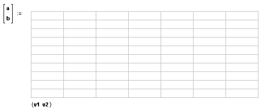

Input and Output Variables |
Mathcad exchanges data with a component by using input and output variables. All components can accept and/or return scalars or arrays, and some components can also pass strings.
The picture below illustrates the location of input and output variables for the Excel component, although they appear in the same manner for all components which support them. The variables a and b are the output variables (data returned to Mathcad), and v1 and v2 are the input variables (data sent to the component).

| Adding or Removing Input and Output Variables |
To add input or output variables for a component:
Click once on the component to select it.
Right-click on the component, and choose Add Output Variable or Add Input Variable from the menu to add an output or input. Another placeholder appears in the appropriate location.
To eliminate inputs and outputs, right-click on the component and choose Remove Output Variable or Remove Input Variable from the menu.
By associating a component or control with input and output values, you define its place in the calculation order of the worksheet, and notify it to recalculate when input values change, as well as notify the worksheet when to update the output values. It is therefore important that you assign input and output values to any component that uses these worksheet variables, even if you access the value of the variable through Mathcad's Automation interface using GetValue or SetValue methods. See the Developer's Reference under Help for more information.
| Choosing the display of inputs and outputs |
Input and output variables can be hidden from view by right-clicking on the component and choosing Hide Arguments. To expose hidden arguments, right-click on the component and choose Show Arguments.